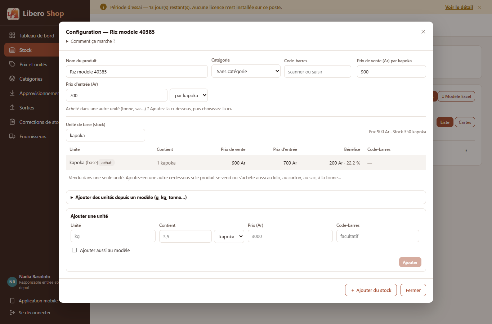
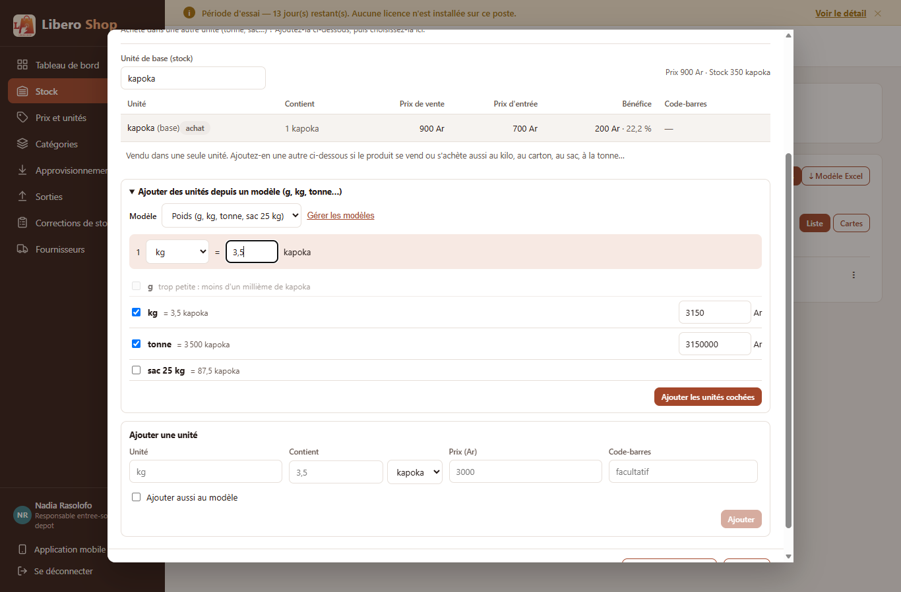
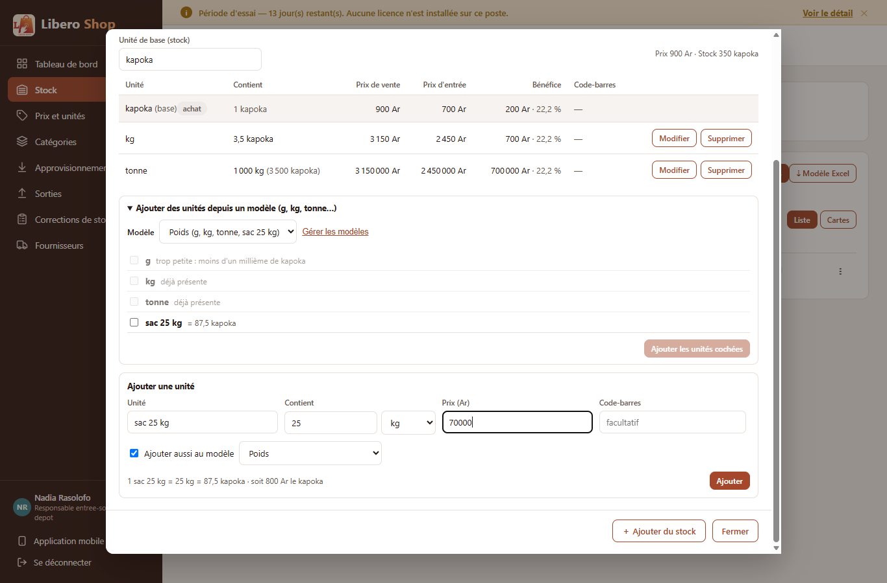
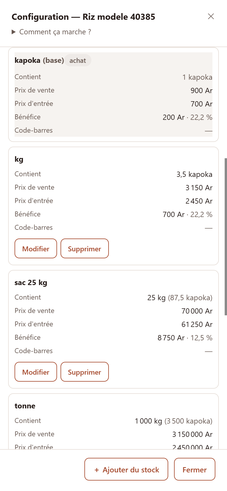
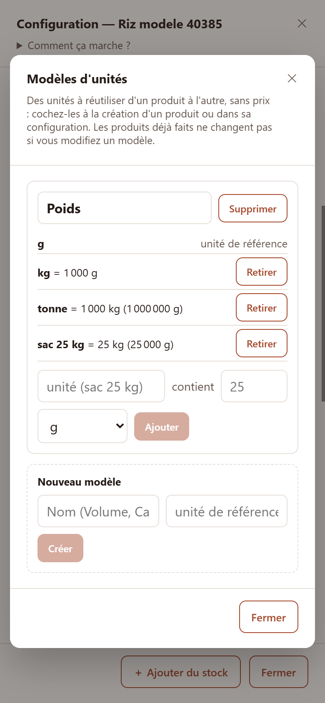
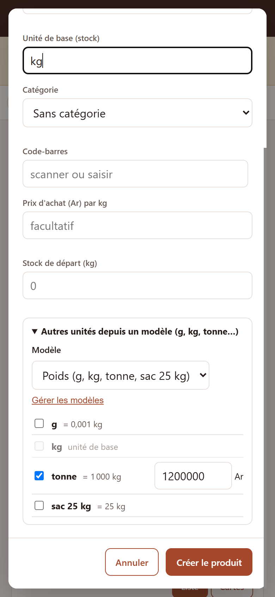

← Tous les comptes rendus de l'interface
Modèles d'unités et fenêtre de configuration sans défilement de côté
- La fenêtre Configuration d'un produit est plus large sur ordinateur. Sur téléphone, elle prend tout l'écran et chaque unité devient une carte. Elle ne défile plus jamais de côté.
- Nouveau : les modèles d'unités. Un modèle est une liste d'unités à réutiliser, sans prix. Le modèle « Poids » (g, kg, tonne) est créé tout seul.
- À la création d'un produit, comme dans sa configuration, on coche les unités d'un modèle. Le prix de chacune est proposé et reste modifiable.
- Pour un riz compté en kapoka, on dit une seule fois « 1 kg = 3,5 kapoka ». Le kg et la tonne sont ensuite calculés.
- En ajoutant une unité à la main, on peut cocher « Ajouter aussi au modèle » : dans un modèle existant, ou dans un nouveau modèle à nommer, puis à renommer si besoin.
- Un modèle ne change aucun produit : ses unités sont copiées. Renommer ou supprimer un modèle ne touche pas aux produits déjà faits.
1. Le problème
- Défilement de côté. Le tableau des unités a sept colonnes. Dans une fenêtre de 680 pixels, il débordait : il fallait faire défiler de gauche à droite pour voir le bénéfice ou les boutons. Sur téléphone, c'était pire.
- Unités retapées à chaque produit. Le gramme, le kilo et la tonne se retapaient pour chaque produit vendu au poids, avec leur contenance. C'est long, et une faute de frappe fausse le stock à chaque vente.
2. La fenêtre de configuration
1Sur ordinateur
La fenêtre passe à 1 040 pixels de large. Les champs du produit se rangent sur autant de colonnes que la largeur permet. Le tableau des unités tient en entier : plus de barre de défilement.2Sur téléphone
La fenêtre prend tout l'écran. Le titre et les boutons du bas restent visibles. Chaque unité devient une carte : son nom en titre, puis une ligne par chiffre (contient, prix de vente, prix d'entrée, bénéfice, code-barres).3Moins de texte en haut
Le long paragraphe d'explication est replié dans « Comment ça marche ? ». Il s'ouvre d'un clic.3. Les modèles d'unités
Un modèle est une liste d'unités avec leurs contenances, sans prix ni stock. Exemple, le modèle « Poids » créé tout seul au démarrage :
| Unité | S'écrit | En grammes |
|---|---|---|
| g | unité de référence du modèle | 1 |
| kg | 1 000 g | 1 000 |
| tonne | 1 000 kg | 1 000 000 |
On s'en sert à trois endroits :
ANouveau produit
« Autres unités depuis un modèle » : on coche le kg, la tonne… et on règle leurs prix. Elles sont créées avec le produit, dans la même opération.BConfiguration d'un produit
« Ajouter des unités depuis un modèle » : même chose pour un produit qui existe déjà. Une unité que le produit a déjà est grisée (« déjà présente »).C« Ajouter aussi au modèle »
Sous « Ajouter une unité » : l'unité tapée à la main (un « sac 25 kg » = 25 kg) part aussi dans un modèle. On choisit le modèle, ou « ＋ Nouveau modèle… » avec son nom.« Gérer les modèles » ouvre une fenêtre pour renommer un modèle, lui ajouter ou retirer des unités, le supprimer, ou en créer un nouveau (Volume, Cartons…).
4. Comment le modèle rejoint le produit
Le modèle dit seulement comment ses unités se comparent entre elles. Pour les mettre sur un produit, il faut savoir où le modèle rejoint ce produit. Le serveur le cherche dans cet ordre :
Chaque unité ajoutée passe ensuite par les mêmes règles qu'une unité tapée à la main : au plus trois décimales, pas exactement une unité de base, prix supérieur à zéro, nom libre. Si une seule est refusée, aucune n'est ajoutée, et le message dit laquelle (« "g" : la contenance accepte au plus 3 décimales… »).
Quand le produit a déjà l'unité de référence, la nouvelle unité est écrite comme dans le modèle : la tonne reste « 1 000 kg ». Si l'on corrige plus tard le kg du riz (3,6 kapoka au lieu de 3,5), la tonne suit d'elle-même.
5. Le résultat en images
Sur ordinateur
Nadia — responsable de dépôt La fenêtre d'un riz compté en kapoka : tout le tableau tient.

« Ajouter des unités depuis un modèle » : le riz ne partage aucune unité avec « Poids », la fenêtre demande donc « 1 kg = 3,5 kapoka ». Le gramme est grisé : il ferait 0,0035 kapoka, moins d'un millième.

Un « sac 25 kg » tapé à la main, avec « Ajouter aussi au modèle » : le modèle « Poids » est proposé, car il connaît le kg.

Sur téléphone



Contrôle automatique (scratch/drive-unit-models.mjs) : sur ordinateur (1 366 px) et sur téléphone (390 px),
ni la page, ni la fenêtre, ni son contenu ne sont plus larges que l'écran ; aucune erreur dans la console, hors le refus
attendu quand on ajoute deux fois la même unité à un modèle.
6. À éviter / attendu
// Un « kg = 3,5 kapoka » mis dans un modèle partagé :
// faux pour le sucre (≈ 4 kapoka le kg).
modèle Riz : kg = 3,5 kapoka// Le modèle ne dit que ce qui est vrai partout,
// le produit dit le reste, une fois :
modèle Poids : kg = 1 000 g, tonne = 1 000 kg
riz : 1 kg = 3,5 kapoka → tonne = 3 500 kapoka/* une colonne de plus = un défilement de côté */
.table-scroll { overflow-x: auto; }/* étroit : chaque ligne devient une carte */
@media (max-width: 760px) {
.un-table td[data-label]::before { content: attr(data-label); }
}7. Tableau récapitulatif
| Fichier | Changement |
|---|---|
entity/UnitModel.java, entity/UnitModelUnit.java | nouvelles tables unit_model et unit_model_unit (créées par ddl-auto=update) |
service/UnitModelService.java | créer, renommer, supprimer un modèle ; ajouter, retirer une unité |
service/UnitModelApplication.java | mettre les unités cochées sur un produit (point de rencontre, règles de PackagingRules, tout ou rien) |
service/UnitModelFactors.java | calcul exact des contenances dans un modèle |
service/ProductUnitService.java, service/ProductEditService.java | ajout depuis un modèle ; création d'un produit avec ses unités cochées |
web/UnitModelController.java, web/ProductUnitController.java | /api/unit-models ; POST /api/products/{id}/units/from-model (responsable de dépôt, administrateur) |
bootstrap/UnitModelSeed.java | modèle « Poids » créé quand il n'y a aucun modèle |
ui/…/product-units-dialog.component.ts | fenêtre élargie, cartes sur téléphone, section « depuis un modèle », « Ajouter aussi au modèle » |
ui/…/product-create-dialog.component.ts | unités d'un modèle cochées à la création |
ui/…/unit-model-picker.component.ts, unit-models-dialog.component.ts | sélecteur d'unités d'un modèle ; fenêtre « Modèles d'unités » |
ui/…/core/catalog/unit-model-plan.ts | aperçu à l'écran du même calcul que le serveur (grise ce qui serait refusé, propose les prix) |
| Règle | Test |
|---|---|
| Une unité écrite dans une autre est comptée jusqu'à la référence (tonne = 1 000 000 g) | UnitModelServiceTest.uniteEcriteDansUneAutre |
| Nom déjà pris (référence comprise, sans casse) ; référence inconnue ; contenance égale à la référence ; retrait d'une référence ; nom de modèle unique ; création tout ou rien | UnitModelServiceTest (6 autres tests) |
| Produit en kg : g et tonne sans rien demander | UnitModelApplicationTest.produitCompteEnKg |
| Riz en kapoka : « 1 kg = 3,5 » ; ou son kg déjà là ; sinon la question est obligatoire | produitAvecAncre, produitQuiADejaLeKg, ancreManquante |
| Un gramme de riz (0,0035) refusé, et rien d'autre ajouté ; unité déjà présente refusée | toutOuRien, uniteDejaPresente |
| Produit créé avec ses unités cochées | creationAvecUnites |
| « Poids » créé seulement s'il n'y a aucun modèle | UnitModelSeedTest |
| Aperçu à l'écran identique au serveur | unit-model-plan.spec.ts (6 tests) |
Tests : serveur 608 au vert, interface 201 au vert, ng build de production réussi.